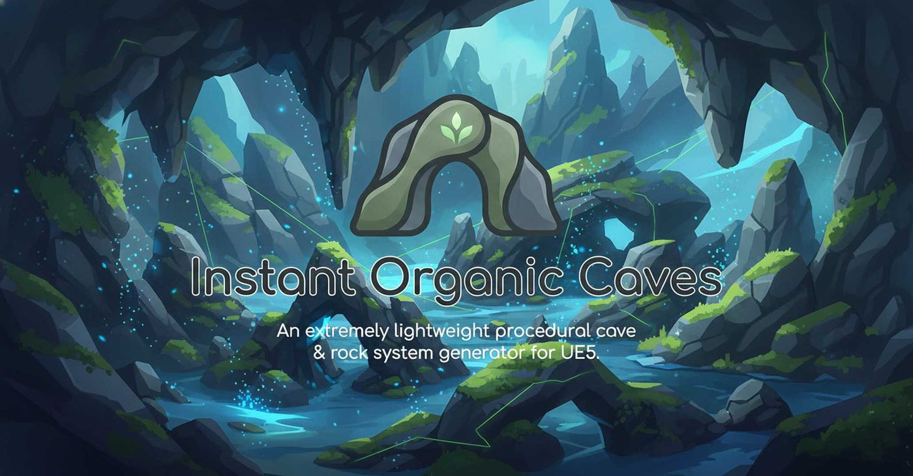

Introduction

Instant Organic Caves (IOC) is a high-performance C++ plugin for Unreal Engine that replaces static cave asset packs with a fully deterministic, parametric procedural pipeline. It generates tunnels and density-field caverns asynchronously on background threads, with explicit production budgets, seam-safe open-world chunk streaming, runtime mesh carving, Biome Volume spatial overrides, Blueprint gameplay APIs, and full multiplayer replication.
All voxel evaluation and meshing run on background threads. Main thread only commits the final mesh.
Distance-field plus noise radius guarantees a connected organic tube between any two 3D points, or follow a spline for art-directed paths.
StreamingManager auto-loads/unloads voxel-grid-aligned chunks around players with throttled spawning and carve history persistence.
Place AIOCBiomeVolume brushes to locally override noise frequency, radius, wall thickness, or terrace steps within any sub-region.
Blow holes at runtime from Blueprint. Carve history is replicated and persists across streaming chunk unload/reload.
Procedural math rock uses World Position noise. Zero texture bytes, no UV stretching, infinite scale.
Quickstart & Demo
🗺️ Fastest route in — the demo map
- Tools → Instant Organic Caves → Open Demo Map
- Press Play.
The guided eight-section showcase starts on its own and builds every cave live — nothing is pre-baked. Nothing needs setting up first.
/InstantOrganicCaves/Maps/IOC_DemoMap. The Content Browser
hides plugin content unless Settings → Show Plugin Content is ticked,
which is why the menu entry is the reliable way to reach it.🚀 Instant Demo — one command
- Open the console (
~) or Output Log. - Type:
IOC.SpawnTunnelDemo - Press Enter. Walk around immediately.
🌌 Spectacular Demo
Run IOC.SpawnSpectacular to generate an Alien Hive preset cave with Domain Warping and Terracing at VoxelSize=50 for maximum geometric detail.
🎬 Showcase Flythrough — the full tour
Run IOC.SpawnShowcase for an automated, captioned flythrough of eight sections:
Drop-In Cave Actor, Path-Driven Tunnel, Alien Hive, Canyon Strata, Scatter Props, Directed
Carving, Streaming Manager, and Performance & Bake. It builds eight caves, a camera rig
and its own lighting, and is safe to re-run — a second call reuses what is already there
rather than duplicating it.
Prefer menus? Everything here is also under Tools → Instant Organic Caves, and the guided wizard is at Window → IOC Setup Wizard…
🧹 Cleaning up
The demos spawn actors into whatever level is open, so there are two ways to remove them:
IOC.ClearShowcase— removes the showcase flythrough and restores the camera. Leaves the tunnel and spectacular demos alone.IOC.ClearAllDemos— removes everything the demo commands created, including the tunnel demo, the spectacular demo and the demo character. Use this one to put your level back as you found it.
IOC.ValidateInstallation writes a diagnostic report to the Output Log if anything
looks wrong with the install.📐 Manual Placement
- Place Actors panel → search
IOC→ dragAIOCProceduralActorinto the level. - Choose a CavePreset from the dropdown, click Apply Preset.
- Click Generate Cave and wait for async generation to complete.
IOC.SpawnTunnelDemo and IOC.SpawnSpectacular use ECVF_Cheat and are excluded from Shipping builds.Compatibility
| Item | Details |
|---|---|
| Engine Versions | Unreal Engine 5.5, 5.6, 5.7 (source-included Fab package) |
| Platforms | Win64, Mac, Linux, Android, iOS |
| Module Type | Runtime — works in packaged Shipping builds |
| Required Plugins | PCG, GeometryScripting, EnhancedInput (bundled with UE) |
| Network | Full actor replication (server-authority generation, client receive via OnRep) |
| Nanite | Optional on baked Static Mesh. API guarded for 5.5/5.6 compatibility. |
| NavMesh | Optional auto-rebuild per actor or per streaming chunk. |
The Setup Wizard
Open it from Tools > Instant Organic Caves, from Window, or with IOC.OpenSetupWizard. It is native C++ Slate and depends on no Python, Blueprint, or Editor Utility Widget.
The wizard is a five-step pass. Each step both configures the cave and checks the project can actually build it:
| Step | What it does |
|---|---|
1 · Welcome | Project snapshot — validation state, cave actors already in the level, estimated voxel workload, and whether you are spawning a new actor or reconfiguring an existing one. Validate Now and Prepare Starter Assets live here. |
2 · Choose Cave | Preset or Custom, with a live preview. Convert Preset to Custom copies the current preset's values in as a starting point rather than dropping you on defaults. |
3 · Environment | Lighting, fog and an optional playtest character, so the cave is walkable the moment it finishes. |
4 · Review | Readiness checks and the voxel budget with a risk band. Generation is blocked while a check is failing — each one exists because it produces a cave that looks broken rather than an error you could diagnose. |
5 · Finish | Generate, then post-generation actions: open the demo map, create a starter level, add a carving volume or streaming manager. |
Undo Added Actors in the footer removes everything the run placed, in one click, so the wizard is safe to experiment with. Settings persist between sessions, and Save / Load Profile carries a configuration between projects.
Automated Showcase & Flythrough
The Cinematic Showcase is controlled by the AIOCShowcaseLauncher actor. It handles async readiness guards, streaming, PCG scattering, and baked mesh transitions automatically.
ShowcaseLauncher CallInEditor Buttons
- Start Showcase — run with diagnostic HUD and generation metrics.
- Start Capture Showcase — immersive captions only, no debug text (ideal for video).
- Clear Showcase — destroys all generated actors, restores viewport camera.
bLoopShowcase on the Launcher Actor for trade show kiosks. The showcase waits on an async Readiness Guard before the camera moves.AIOCProceduralActor
The core placement unit. Drop one into a level, configure its categories in the Details panel, and click Generate Cave. Every property tagged ReplicatedUsing=OnRep_GenerationSettings synchronises across network sessions.
Cave Presets — IOC category
| Preset | Key Parameters & Use |
|---|---|
| Custom | All parameters controlled manually. |
| Large Tunnel | Wide majestic passages. TunnelRadius ~450, SmoothIterations=3. |
| Tight Crawlspace | Claustrophobic crawl. TunnelRadius ~150, higher NoiseFrequency. |
| Open Cavern | Massive halls. TunnelRadius ~1200, blob mode, large bounds. |
| Alien Hive (Warped) | Domain Warping enabled, high DomainWarpIntensity, biomorphic silhouette. |
| Canyon Strata (Terraced) | TerraceSteps active, layered horizontal ledges, geological look. |
bForcePreset (IOC|Advanced) to automatically re-apply the preset every BeginPlay, overriding any in-editor manual customisations.Shape Properties — IOC|Shape
| Property | Description & Notes |
|---|---|
| GenerationBounds | FVector size (X,Y,Z) in centimetres. Non-cubic volumes allow flat tunnels or tall shafts. |
| VoxelSize | Edge length of each voxel cube. Default 50.0 cm. Halving octuples voxel count. |
| CaveSeed | Integer seed for deterministic noise. Same seed + same params = identical mesh. Default 1337. |
| NoiseThreshold | Density iso-surface. Voxels below this value are carved. Default 0.5. |
| SmoothIterations | Laplacian smoothing passes. 0 = voxel look, 3 = organic, 5+ = rounded. Default 3. |
| MacroChamberWeight | Blends low-frequency macro noise to create large open chambers. Range 0–1. |
| RidgedDetailWeight | Adds high-frequency ridged noise for sharp rock detail. Range 0–1. |
| InteriorDensityBias | Shifts interior density. Positive opens the cave; negative closes it. Range −1 to 1. |
Noise & Octave Controls — IOC|Shape
| Property | Description |
|---|---|
| NoiseFrequency | Base scale of the noise field. Lower → bigger features. Typical range 0.001–0.05. Default 0.005. |
| NoiseOctaves | Fractal noise layers summed. Higher = more surface detail. Range 1–8. Default 4. |
| NoiseLacunarity | Frequency multiplier between octaves. Default 2.0. |
| NoisePersistence | Amplitude scale-down per octave. Default 0.5. |
| DomainWarpIntensity | Warps the sampling position before noise evaluation. Creates folded, twisted shapes. 0 = disabled. |
| TerraceSteps | Quantises density into discrete bands. 0 = disabled. Creates horizontal ledges. |
| bUseWorldSpaceNoise | Samples noise in world space. Required for seamless chunk boundaries in streaming. |
Perlin Tunnels — IOC|Tunnel
Enable bGenerateTunnel to switch from blob/cavern mode to tunnel mode. The algorithm computes the distance field to a line segment between two points, then adds 3D Perlin Noise to the radius, producing a guaranteed connected organic tube.
| Property | Description |
|---|---|
| bGenerateTunnel | Master toggle for tunnel mode. |
| TunnelStart | Start point in actor-local space. Viewport widget editable. Disabled when bUseSpline is on. |
| TunnelEnd | End point in actor-local space. Viewport widget editable. |
| TunnelRadius | Base radius of the carved tube in centimetres. Noise adds organic variation. |
| WallThickness | Shell thickness around the hollow tube. |
| bUseFixedBoundsForTunnel | Uses GenerationBounds exactly rather than auto-expanding to fit TunnelEnd. |
Spline-Driven Tunnels — IOC|Tunnel
Enable bUseSpline (requires bGenerateTunnel) to drive the tunnel axis using the built-in USplineComponent (CaveSpline). Edit spline points directly in the viewport for full art-direction.
CaveSpline component is auto-created by the actor and is visible in the Components panel. Noise radius still applies to each spline tangent position.Appearance — IOC|Appearance
| Property | Description |
|---|---|
| CaveMaterial | Material for the primary mesh. Defaults to MI_IOC_CaveWalls. Accepts any UMaterialInterface. |
| TextureTiling | UV tiling multiplier passed to the material. Default 0.01. |
| bGenerateSmartColors | Paints vertex colors based on surface orientation (floor/wall/ceiling). Used by the Smart Cave material. |
LOD System — IOC|Advanced
A dedicated second UDynamicMeshComponent (LODMeshComponent) is generated at a coarser voxel resolution. The system switches to this mesh when the camera exceeds LODDistance.
| Property | Description |
|---|---|
| bEnableLOD | Master toggle. Default true. |
| LODDistance | Switch distance in centimetres. Default 5000. |
| LODVoxelSizeMultiplier | LOD mesh uses VoxelSize × this. Default 3.0 (1/27th the voxel count). Range 1–16. |
Production Budgets — IOC|Production
These caps protect runtime memory and frame time. Generation is aborted and an error logged if any limit is exceeded.
| Property | Default | Notes |
|---|---|---|
| MaxVoxelCount | 15,000,000 | Exceeding this aborts generation immediately. |
| MaxGeneratedTriangles | 2,000,000 | Primary mesh triangle cap. |
| MaxScatterInstances | 100,000 | Total HISM instances across all decoration layers. |
Advanced Options — IOC|Advanced
| Property | Description |
|---|---|
| bAutoRebuildNavMesh | Triggers a NavMesh rebuild after mesh commit. |
| bForcePreset | Applies selected preset on BeginPlay, overriding in-editor values. |
| bShowDebugViz | Draws cyan bounds box and green tunnel line in editor. Default true. |
| bLogPresetDebug | Prints preset parameter values to Output Log on ApplyPreset. |
| bUseWorldSpaceNoise | World-space noise sampling for seam-free streaming. |
Real-Time Performance Stats — IOC|Performance
| Property | Description |
|---|---|
| LastGenerationTimeSeconds | Wall-clock seconds the async task took. |
| LastEstimatedVoxelCount | Total voxels evaluated. |
| LastPrimaryTriangleCount | Triangles in the full-detail primary mesh. |
| LastLODTriangleCount | Triangles in the LOD mesh. |
| LastScatterInstanceCount | HISM instances placed across all decoration layers. |
| bLastGenerationSucceeded | False if any budget was exceeded or an error occurred. |
| LastGenerationError | Human-readable error string if generation failed. |
Open World AIOCStreamingManager
Place one AIOCStreamingManager in your level. The server-authority tracks all player pawns, spawns replicated AIOCProceduralActor chunks within StreamRadius, and destroys chunks beyond the unload radius. Chunk creation is throttled per update tick.
All spawned chunks use world-space noise (forced) and are positioned on a voxel-aligned integer grid so neighboring chunks share identical density samples at their boundaries — eliminating seams.
Streaming Parameters
| Property | Category | Description |
|---|---|---|
| ChunkSize | IOC Streaming | World-space size of each chunk. Rounded to whole voxels. Default 2000x2000x1500 cm. |
| StreamRadius | IOC Streaming | Manhattan radius of loaded chunks around the player chunk. Range 1–8. Default 2. |
| UnloadDistanceBias | IOC Streaming | Chunks beyond StreamRadius × this are destroyed. Default 1.2. |
| MaxLoadedChunks | IOC Streaming|Production | Hard cap across all tracked players. Default 64. |
| MaxChunkLoadsPerUpdate | IOC Streaming|Production | Max new actors spawned per update tick. Default 2. |
| StreamingUpdateInterval | IOC Streaming|Production | Update cadence in seconds. Default 0.25. |
| NoPlayerUnloadDelay | IOC Streaming|Production | Seconds without a pawn before chunks release. Default 10. |
| BaseSeed | IOC Generation | Seed offset. Each chunk seed = BaseSeed + hash(chunk coord). |
| VoxelSize | IOC Generation | Voxel resolution for every chunk. Default 80.0 cm. |
| CavePreset | IOC Generation | Applied uniformly to every spawned chunk. |
| SharedMaterial | IOC Appearance | Material for every chunk. Null uses the default plugin material. |
| SharedDecorationLayers | IOC Decoration | Scatter layers shared by every spawned chunk. |
| DomainWarpIntensity | IOC Spectacular | Domain warp applied to every chunk. |
| TerraceSteps | IOC Spectacular | Terrace stepping applied to every chunk. |
Player Coupling — IOC Streaming|Coupling
When bAutoCouplePlayerAtStart is enabled, the manager teleports the first possessed pawn to its world position + CaveStartOffset, holds it at PlayerStartHoldHeight until the initial chunk finishes generating, then uses a downward trace of GroundProbeDistance to land the player on the first solid surface.
bAllowCouplingInNetworkGames is explicitly true.Blueprint API — Streaming Manager
void RebuildAroundLocation(FVector WorldLocation); // Force-recentre chunk grid
FVector GetEffectiveChunkSize() const; // Voxel-aligned actual chunk size
int32 GetLoadedChunkCount() const;
int32 GetPendingChunkCount() const;
// Runtime carving (authority only)
void CarveStreamedCavesAtLocation(FVector WorldLocation, float Radius);
void ClearStreamedRuntimeCarves();Spatial Override AIOCBiomeVolume
Place AIOCBiomeVolume brush actors overlapping your generation bounds. When the actor runs generation, each voxel position is tested against all Biome Volumes and the highest-Priority override is applied, allowing local characteristic changes without separate actors.
| Property | Description |
|---|---|
| Priority | When volumes overlap, highest Priority wins. Default 0. |
| bOverride_NoiseFrequency | Toggle + value to locally change cave detail density. |
| bOverride_TunnelRadius | Widen or narrow the tunnel radius inside this volume. |
| bOverride_WallThickness | Change wall thickness for this region. |
| bOverride_TerraceSteps | Enable or change terrace step height locally. |
Carving System
IOC provides two carving mechanisms: static editor-time carving via component, and dynamic runtime carving via Blueprint.
Static Editor Carving — UIOCCarvingComponent
Add a UIOCCarvingComponent as a child of any AIOCProceduralActor. The actor automatically discovers all attached carving components at generation time and guarantees the carved volume is hollow regardless of the noise field. Use for guaranteed doors, corridors, or entry points.
| Property | Description |
|---|---|
| ShapeType | Sphere, Box, or Capsule. |
| SphereRadius | Radius in cm when ShapeType = Sphere. |
| BoxExtent | Half-extents (X,Y,Z) in cm when ShapeType = Box. |
| CapsuleRadius / CapsuleHalfHeight | Capsule dimensions when ShapeType = Capsule. |
| FalloffRadius | Soft-blend distance in cm at the edge of the carved shape. Prevents hard seams. |
Runtime Carving — IOC Gameplay
Blow holes at runtime from Blueprint or C++ (server-authority only). Carve operations are stored in RuntimeCarves (a SaveGame TArray), replicated via OnRep_RuntimeCarves, and re-applied when the mesh regenerates.
| Property / Function | Description |
|---|---|
| MaxRuntimeCarves | Maximum carve history entries per actor. Default 256. |
| MinRuntimeCarveRadius | Minimum carve radius in cm. Default 25.0. |
| MaxRuntimeCarveRadius | Maximum carve radius in cm. Default 5000.0. |
| CarveAtLocation() | BlueprintCallable, BlueprintAuthorityOnly. Sphere carve at world location + regeneration. |
| ClearRuntimeCarves() | Removes all carve history and regenerates. Authority only. |
// Server-side carving example
void AMyGameMode::OnExplosion(FVector WorldPos, float Radius)
{
if (AIOCProceduralActor* Cave = FindNearestCave(WorldPos))
Cave->CarveAtLocation(WorldPos, Radius);
}RuntimeCarves array through initial replication, triggering a local OnRep_RuntimeCarves to regenerate and match the server state.Decoration Scatter System
Add FIOCScatterLayer entries to DecorationLayers on the actor (or SharedDecorationLayers on the StreamingManager). After meshing, IOC scatters HISM instances on matching faces.
Eight props ship with the plugin in /InstantOrganicCaves/InstantOrganicCaves/Geometry/ — the segment repeats because the plugin mounts its Content folder as /InstantOrganicCaves and keeps the meshes in a folder of the same name inside it — so a furnished cave needs no sourced art: SM_IOC_Rock_A, _B and _C (boulder down to gravel), SM_IOC_Crystal_A and _B, SM_IOC_Geode, SM_IOC_Stalactite and SM_IOC_Stalagmite. Each has two LODs, simple collision, and a pivot placed for how it is used — stalactites hang from their top, everything else sits on its base — so instances neither float nor sink when aligned to a surface.
| Property | Description |
|---|---|
| Mesh | Static Mesh asset to scatter (stalactites, crystals, debris). |
| Density | Instances per square metre of matching surface. |
| ScaleRange | Min/Max random uniform scale. Default 0.8–1.2. |
| bAlignToNormal | Rotates each instance to align with the surface normal. |
| MinSlopeZ / MaxSlopeZ | Filter by surface Z-normal. 1.0=floor, 0.0=wall, −1.0=ceiling. Use −1.0/−0.5 for ceiling stalactites. |
| RandomPitch | Random pitch jitter in degrees for organic variation. |
| PoissonMinSeparation | When > 0, uses Poisson disk sampling with this minimum distance (cm). Prevents instance overlap. |
Material Pipeline
IOC ships a hybrid pipeline. The default MI_IOC_CaveWalls lets you toggle between a zero-texture procedural rock and high-fidelity PBR textures.
Two Sided must be on. A cave is a shell —
TunnelRadius of air inside WallThickness of rock — and the player stands inside it, so the tunnel bore's surfaces face away from the camera. A one-sided material culls them and the wall renders transparent: you see through it, through the outer shell behind it, and out of the level. Unreal flips the vertex normal on backfaces for two-sided materials, so shading stays correct.
Used with Instanced Static Meshes must be on for anything used by a scatter layer. Props are placed on HISM components, and a material without that usage flag cannot be applied to one — the engine silently substitutes
WorldGridMaterial and every instance renders untextured grey. This one only shows up in a packaged or -game build: in the editor the flag is set on the fly and thrown away again each session, so the editor looks correct while the shipped product does not.
Both flags live on the base
UMaterial, never on a Material Instance. If Unreal warns you about an instance, the flag it wants is on that instance's parent.Pure Math Material — M_IOC_MathRock
Uses Absolute World Position fed into multi-octave Simplex Noise to generate base color, moss patches, roughness variation, and subtle normal perturbation — algorithmically, with zero texture bytes.
- Zero memory footprint — 0 bytes of texture data.
- Infinite scale — identical on a 1 m crawlspace or a 500 m cavern.
- Seam-free — world-space sampling makes chunks tile seamlessly.
- Smart Vertex Color support — blends color tones automatically per surface zone.
PBR Texture Mode
Set UsePBRTexture = true on MI_IOC_CaveWalls and select a CaveStyleTexture:
- T_RockObsidian — Glossy volcanic glass with organic ridges.
- T_RockLimestone — Porous light-grey stalactite surface.
- T_RockAlien — Dark bioporous stone with bioluminescent green veins.
Also included: M_IOC_SmartCave and MI_IOC_SmartCave_Inst — add slope-based height blending for additional biome variation.
Triplanar UV Generation
IOC generates UVs using Box Mapping (Triplanar) projection. Each face's dominant world normal (X, Y, or Z) selects the projection axis, eliminating stretching on steep walls and overhanging ceilings. The TextureTiling property scales UV frequency globally.
Smart Vertex Colors
When bGenerateSmartColors is enabled, the generation pass writes vertex colors based on each vertex's world-space Z normal:
- Red — floor intensity (normal.Z > 0.7)
- Green — ceiling intensity (normal.Z < −0.5)
- Blue — wall intensity (intermediate normals)
PCG Integration
The IOCVoxelCore PCG node exposes the same density field as the Actor to the Procedural Content Generation graph. Use it to scatter PCG points on the generated surface for foliage, crystals, lighting, or AI spawn points.
Included PCG Content
IOC_Graph_Master— Master PCG graph with IOCVoxelCore pre-wired.IOC_Fn_OrganicNoise— Noise-based density filtering sub-graph.IOC_Fn_ScatterCrystals— Crystal decoration scatter layer preset.NewPCGGraphInstance— Ready-to-use PCG Graph Instance.
Multiplayer Networking & Replication
| Property / Group | Rep Condition | Notes |
|---|---|---|
| All Shape/Tunnel/Appearance params | COND_None | OnRep_GenerationSettings triggers full async regeneration on clients. |
| RuntimeCarves | COND_None (SaveGame) | OnRep_RuntimeCarves re-applies carve history and regenerates clients. |
Authority-only functions
All mutation functions are BlueprintAuthorityOnly: CarveAtLocation, ClearRuntimeCarves, CarveStreamedCavesAtLocation.
Delegates
// Broadcast when async task begins
FIOCGenerationStartedSignature OnGenerationStarted; // (AIOCProceduralActor*)
// Broadcast when async task completes
// bCancelled=true if superseded; bWillRegenerate=true if another request is pending
FIOCGenerationFinishedSignature OnGenerationFinished; // (Actor*, bCancelled, bWillRegenerate)Async Generation Architecture
All generation runs on an AnyBackgroundThreadNormalTask worker. The pipeline stages are:
- Bounds validation — abort if MaxVoxelCount exceeded.
- Parallel voxel evaluation —
ParallelForacross the X axis (multi-core, since v1.1). - Biome Volume sampling — POD copies of FIOCBiomeData read (no UObject access on worker thread).
- Marching Cubes meshing via GeometryScripting.
- Laplacian smoothing passes.
- UV generation — triplanar box mapping.
- Smart vertex colors (optional).
- LOD mesh — same pipeline at VoxelSize × LODVoxelSizeMultiplier.
- Decoration scatter — HISM placements computed on background thread.
- Game thread commit — applies mesh, collision, material, HISM data.
An std::atomic<bool> bCancelRequested inside FIOCGenerationState allows a new request to safely cancel an in-flight task without unsafe UObject access.
Static Mesh Baking — IOC|Production|Bake
Once satisfied with a procedural cave, bake it to a permanent UStaticMesh asset. Press the Bake to Static Mesh CallInEditor button (Editor-only).
| Property | Description |
|---|---|
| BakedAssetBaseName | Asset name for the saved Static Mesh. Default SM_IOC_Cave. |
| BakeMaterialOverride | Optional material override for the baked mesh. Null uses the current cave material. |
| bBakeGeneratedLOD | Includes the LOD mesh as LOD1 on the baked Static Mesh. |
| bBakeEnableNanite | Enables Nanite on the baked mesh (API guarded for UE 5.5/5.6 compatibility). |
| BakeCollisionMode | ProjectDefault or ComplexAsSimple. |
| BakedLODScreenSize | Screen-size threshold for LOD1 transition. Default 0.25. Range 0.01–1.0. |
Spectacular Features
Domain Warping
Set DomainWarpIntensity > 0 to displace the noise sampling position by a secondary noise field. This creates folded, twisted, biopunk cave silhouettes. The Alien Hive preset uses a high intensity (~300). Available on both the Actor and StreamingManager.
Terrace Steps
Set TerraceSteps > 0 to quantise the density field into discrete horizontal bands. The Canyon Strata preset demonstrates this with a geological layered appearance. Also available on the StreamingManager and Biome Volumes.
Best with: Alien Hive preset
Visual: folded, twisted caverns
Best with: Canyon Strata preset
Visual: geological horizontal ledges
Console Commands
ECVF_Cheat and are stripped from Shipping builds. IOC.ValidateInstallation and IOC.OpenSetupWizard are ECVF_Default, but they live in the editor module and so do not exist in a packaged game either.| Command | Description |
|---|---|
IOC.OpenSetupWizard | Opens the Setup Wizard. Same window as the Tools menu entry — useful when the menu is unavailable, or for scripting an editor session. |
IOC.ValidateInstallation | Writes a dependency and content report to the Output Log. Run this first when anything looks wrong. |
IOC.SpawnTunnelDemo | Spawns a Perlin Tunnel (0,0,0) → (3000,1500,800) with full lighting and a playable third-person character with flashlight. |
IOC.SpawnSpectacular | Spawns an Alien Hive preset cave with Domain Warping at VoxelSize=50. Best single-command visual. |
IOC.SpawnShowcase | Captioned flythrough of eight cave sections, with the diagnostic HUD and generation metrics. |
IOC.SpawnShowcaseCapture | The same flythrough with captions only and no debug text — the one to record video from. |
IOC.ClearShowcase | Removes the showcase and restores the viewport camera. |
IOC.ClearAllDemos | Removes everything any demo command added — caves, lights and the playtest character. The commands are designed to leave no residue. |
Blueprint API Quick Reference
AIOCProceduralActor
| Function | Notes |
|---|---|
GenerateCave() | Triggers async generation. Blueprint and C++ callable. |
RequestRegeneration() | Cancels any in-flight task then triggers generation. |
CarveAtLocation(FVector, float) | Authority-only sphere carve + regeneration. |
ClearRuntimeCarves() | Clears carve history and regenerates. Authority only. |
GetPerformanceSummary() | Returns a human-readable string of last generation stats. |
OnGenerationStarted | Multicast delegate fired when generation begins. |
OnGenerationFinished | Multicast delegate (Actor*, bCancelled, bWillRegenerate). |
AIOCStreamingManager
| Function | Notes |
|---|---|
RebuildAroundLocation(FVector) | Force-recentre chunk grid on a world location. |
GetEffectiveChunkSize() | Returns voxel-aligned chunk dimensions used for grid spacing. |
GetLoadedChunkCount() | Current loaded chunk count. |
GetPendingChunkCount() | Chunks queued for loading. |
CarveStreamedCavesAtLocation(FVector, float) | Authority-only. Applies carve to loaded chunks and persists for future loads. |
ClearStreamedRuntimeCarves() | Clears global carve history and regenerates all chunks. |
Troubleshooting
Cave generates nothing / empty mesh
Cause: NoiseFrequency too high — noise oscillates inside a single voxel. Fix: Lower to 0.01 or less.
Cause 2 (Tunnel mode): TunnelRadius < VoxelSize. The tube is sub-voxel sized. Fix: Ensure TunnelRadius > VoxelSize × 2.
Minecraft / blocky voxel look
Cause: SmoothIterations = 0. Fix: Increase to 3 (organic) or 5+ (rounded boulders).
Streaming chunk seams / boundary mismatch
Cause: bUseWorldSpaceNoise off on manually spawned chunks. Fix: StreamingManager forces this automatically. For manual chunks, set it true and use the same BaseSeed.
Cause 2: ChunkSize not divisible by VoxelSize. Use GetEffectiveChunkSize() to verify snapped dimensions.
Generation aborted — budget exceeded
Fix A: Increase VoxelSize — halving it octuples the voxel count.
Fix B: Reduce GenerationBounds and use the StreamingManager for large worlds.
Fix C: Raise MaxVoxelCount / MaxGeneratedTriangles caps after profiling on target hardware.
Player falls through cave floor
Cause A: Generation still running when player is placed. Fix: Bind to OnGenerationFinished before spawning/teleporting.
Cause B: Project Settings > Physics ignores Complex collision. IOC uses ComplexAsSimple. Ensure physics settings do not bypass complex collision traces.
Carves not appearing on all clients
Cause: CarveAtLocation called on a client. It is BlueprintAuthorityOnly. Fix: Route through a Server RPC in your GameMode or PlayerController.
Decoration instances overlapping or too dense
Fix A: Lower Density on the scatter layer.
Fix B: Set PoissonMinSeparation > 0 (e.g. 100 cm) to enforce minimum spacing with Poisson disk sampling.
GregOrigin
High-performance C++ plugins for Unreal Engine. Built for production, documented for clarity, supported actively.
Copyright (c) 2026 GregOrigin. All Rights Reserved.